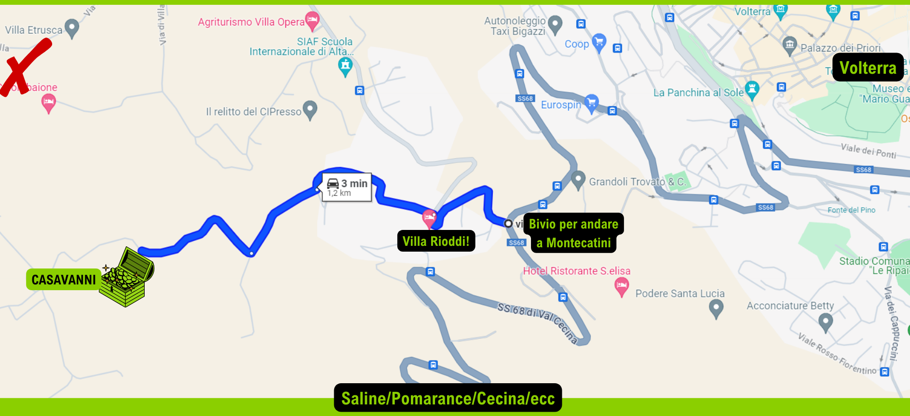

Serviva una pagina web per questa festa? No, ma perché non farla? E quindi eccoci qua.
QUANDO
Sabato 31 agosto 2024, dalle 18:00 fino a quando ne abbiamo voglia. È un magico sabato, quindi
(per la maggior parte delle persone spero) nessun problema di sveglia presto la mattina dopo.
A meno che tu non vada a pesca.
DOVE
A casa mia, cioè a casa di Danilo e dell'Alessandra per la precisone.
Come arrivare
Nel caso non foste pratici di coordinate geografiche, l'indirizzo da mettere su maps (o su qualsiasi altra app di
navigazione usiate) è:
(Cliccate sul link, fate prima)
Vista l'esperienza dell'anno scorso, in cui maps ha fatto perdere metà delle persone invitate, vi agevolo una mappetta
per capire bene dove siamo e che strada prendere:

Mi raccomando per arrivare dovete passare di fianco a Villa Rioddi, non Villa Etrusca.
PERCHÉ
1. Perché la fine dell'estate è un momento sempre malinconico ed è meno malinconico
se lo passiamo insieme
2. Perché non vi vedo mai e mi piace avere tutty y miey amicy riunity
3. Perché i miei genitori ci concedono gentilissimamente l'uso del giardino e della cucina,
(motivo per cui non possiamo devastare tutto, anche perché ora si inizia ad avere un'età bimbə...).
4. Perché l'inizio dell'estate l'ho festeggiato al festival di m3rda di quel c*zzone di Rick Rubin,
quindi la fine dell'estate la festeggio con la mia festa privata, con voi.
5. Perché il trentuno d'agosto c'è una storia che nasce e un'estate che muore.
COME FUNZIONA
Se tutto va secondo i piani ci sarà
- da bere
- da mangiare
- open dj-set (nel senso che ci vuole -e sa- può mettersi in consolle e suonare)
- un po' di giochi
- diversa gente (forse tanta, lo scopriremo)
Per essere più precisi, iniziamo alle 18:00 con l'aperitivo, poi mangiamo qualcosa di più sostanzioso
per cena e poi facciamo un po' quello che ci pare.
Non ci sei per ape? Ci vediamo per cena. Non ci sei per cena? Ci vediamo per il dopo cena.
Non ci sei dopo cena? Ci vediamo per ape e cena. Insomma, venite quando potete e andate quando volete - l'importante
è che me lo facciate sapere, così ci organizziamo.
Cosa si mangia, cosa si beve
Io ci metto lo spazio, le sedie e il dj di serie, voi ci mettete il resto.
Per la festa non si paga niente, ma visto che saremo tant
ə, sarebbe meraviglioso costruirla insieme in modo
da non pesare né sulle tasche, né sulle spalle di nessun
ə. Per questo motivo chiederei a tutt
ə
di portare qualcosina, che sia una birra, un pacco di patatine o una teglia di pasta al forno non importa, ma mi piacerebbe
che contribuissimo tutty.
Vi chiederei di dirmi in anticipo cosa avete intenzione di portare, così riusciamo a coordinarci e non finiamo con solo birre
e patatine (che comunque non è male).
Sto studiando un modo per rendere visibile a tutti chi porta cosa, in modo che questa festa diventi
ufficialmente autogestita,
ma non so se le mie capacità tecnologiche arrivano a tanto. Alla peggio faccio un bel foglio excel e addio.
Se poi volete portare anche qualcosa da ascoltare, da fare, da vedere, da giocare,
sentitevi liberə.
Tuttə benvenutə a casa mia!
Se volete portare qualcuno, +1, +2, +3, va benissimo, basta che me lo facciate sapere con il dovuto anticipo.
La campagna è grande ma non infinita, se mi fate sapere con almeno un paio di giorni di anticipo
riuscimao a organizzarci e siamo tutti content
ə.
M'AMA NON M'AMA
Fammi sapere se ci sei, e in caso cosa vorresti portare qui sotto: